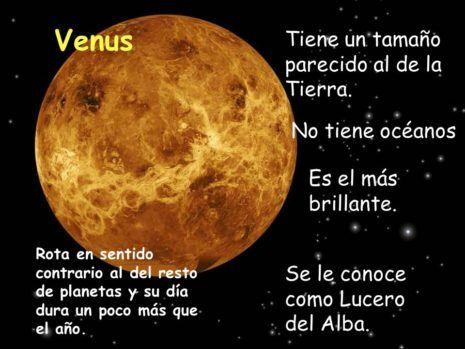

Venus es el segundo planeta del sistema solar en orden de proximidad al Sol y el tercero en cuanto a tamaño en orden ascendente después de Mercurio y Marte. Al igual que Mercurio, carece de satélites naturales. Recibe su nombre en honor a Venus, la diosa romana del amor (en la Antigua Grecia, Afrodita). Al ser el segundo objeto natural más brillante después de la Luna, puede ser visto en un cielo nocturno despejado a simple vista. Se trata de un planeta interior de tipo rocoso y terrestre, llamado con frecuencia el planeta hermano de la Tierra, ya que ambos son similares en cuanto a tamaño, masa y composición, aunque totalmente diferentes en cuestiones térmicas y atmosféricas (la temperatura media de Venus es de 463,85 °C). Su órbita es una elipse con una excentricidad de menos del 1 %, formando la órbita más circular de todos los planetas; apenas supera la de Neptuno. Su presión atmosférica es 90 veces superior a la terrestre; es, por lo tanto, la mayor presión atmosférica de todos los planetas rocosos del sistema solar.
